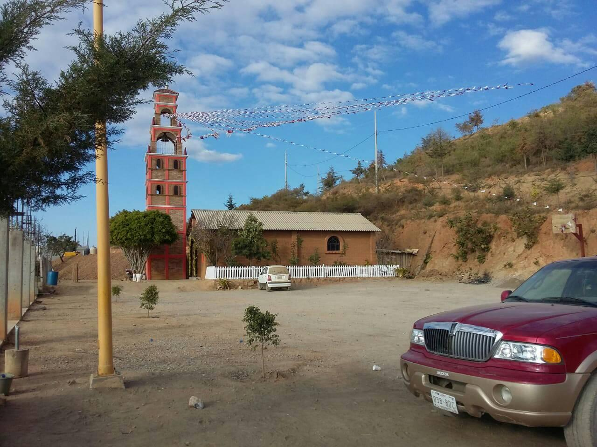

Conoce su Historia
1Historia
El origen y significado del nombre "Trancas" remonta a sus raíces etimológicas ya su contexto histórico. El término Trancas se deriva del idioma náhuatl, hablado por los antiguos habitantes de la región.
El vocablo "Trancas" se compone de dos elementos principales: "tlan" y "co", que juntos forman el significado de "lugar de" o "en el sitio de". Además, se cree que el término Trancas puede referirse a un tipo de arbusto o planta que era común en la zona.
Así, el nombre "Trancas" puede traducirse como "lugar de arbustos" o "en el sitio de los arbustos". Este nombre hace referencia a la vegetación característica de la zona en la cual se encuentra ubicada Trancas.
Galeria


Atractivos Turisticos: